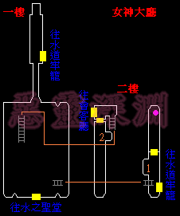
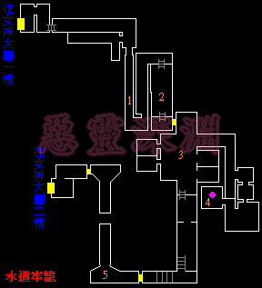
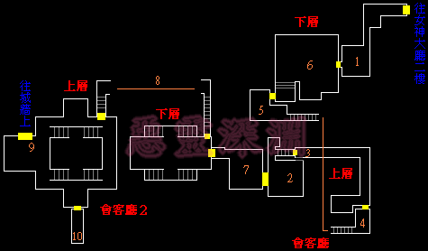
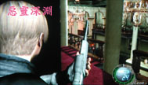
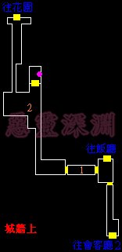

|
惡靈古堡∼惡靈古堡４----地圖攻略∼3-2
|
|
攻略內容以Normal為主，地圖上的紫色圓點●表示高價寶物的位置 ，標綠色的道具則是過關必須的重要道具。
 3-2開始後，依照Salazar的說法去會會他的小寵物吧。往水道牢籠。
 行經到編號1附近時，碰上第一隻昆蟲人諾比斯塔多，牠有隱形的能力，隱形時注意看就可以發現牠的行蹤，不過牠會飛會爬行， 而且常常成群結隊，也算是強敵。在編號2處先從高處解決兩隻昆蟲人比較安全。編號3的地方觸發另一批昆蟲人出現，到4的地方 調節水閥將水放掉，附近寶箱中有高價寶物盲目の蝶のランプ（盲眼蝴蝶的油燈）。降下水位後，回到3，附近某個牢房中有份File Luis的Memo1，不過要小心埋伏的昆蟲人。繼續前進，編號5有四個巨大斧頭不停的晃動，地上有線可以用來判定巨斧的位置，前兩 個只要站在最旁邊等斧頭過去後通過，後面兩個是一起的，所以站在中間來通過。路的盡頭是通往女神大廳二樓。
從二樓看到一樓有好幾個邪教徒不曉得在進行什麼邪惡的儀式，如果被他們發現的話，他們就會逃離並關上門阻止Leon的追擊，想 要賺錢的玩家，先在上圖也就是編號1吊燈前，往下投擲一顆手榴彈，就能擊倒所有黑衣邪教徒，並把邪教徒首領打倒在地，然後 跳到一樓接近往水道牢籠的門觸動門關上，再來慢慢解決首領。
所有邪教徒都會掉落金錢、寶石，邪教徒首領身上則有高價寶石邪悪なる宝玉（邪惡的寶玉）。 拿了高價寶物，先回到二樓，從編號1處利用吊燈跳到對面，再從編號2處利用吊燈再跳回來，即可拿到寶物くぼみのある仮面（有 凹槽的面具），寶物附近有個拉把，可以把二樓的鐵柵欄打開。武器商人移動到二樓了，整理裝備後往會客廳。
 編號1的房間有File第八代城主的Memo。往下一個房間後，會看到紅衣的邪教徒首領下令其他邪教徒攻擊Leon，玩家必須要打倒邪教 徒首領拿到他身上的城內會客廳的鑰匙，雖然一開始他會待在編號2處，不過四周的邪教徒都會發動攻擊，想在原地狙擊不容易， 最好還是先往編號5移動，順便清掉一些擋路的敵人；到達上層之後，因為編號2的平台上有狙擊手，射擊紅色油桶把他們清掉，由 於通往編號2平台的門要從裡面打開，所以玩家必須從編號3的地方跳下去，但是一跳下去後首領就會立刻開門從編號3往編號4逃跑 ，在他從編號4由樓梯往下層編號5的時候可能是玩家離他最近的時候，也是最後機會把他打倒在地，若是擔心追不到，就從編號3 與編號4之間沒有欄杆的地方跳下，往編號5來阻止他。 當他跑到編號6的地方，就會操作旋轉機槍台，那就從下圖的位置來狙擊吧。 在追擊邪教徒首領的途中，其實是Leon到達一個點之 後，他才會往前跑一個點，所以不用太緊張。
 拿到鑰匙就可以前進編號7的房間，房間內有一道機關，寫著「６人的犧牲，將會開啟真實的道路（６人の犠牲によって 真実の 道が開かれる）」，只要讓牆上四張像中的人物加起來共六人即可。 在會客廳2有一大群邪教徒，在下層的話容易被圍攻，最好利用連接上下層編號8的樓梯，上層四個角落都有油燈可以攻擊邪教徒。
按下編號9附近的按鈕，正中央會升起一個平台，Normal以上模式的玩家小心突然出現的火箭砲攻擊，只要跑開即可。打碎編號10的 花瓶，發現花瓶底下也有個按鈕，按下後上層走廊和平台之間會連結一個走道，不過同樣的，Normal以上的玩家不要貿然衝出去， 外面有持火箭砲的邪教徒，可以打開門後立刻後退使門關上，誘發火箭砲發射。拿取中央寶箱中有重要道具山羊的物件，到手後往 城牆上。
 往飯廳的門被反鎖了，不用浪費時間去破壞；編號1的地方雖然有烏鴉，但是因為地形的關係，用閃光手榴彈不容易將牠們一網打 盡，可以略過，不過請抬頭看看，上方有顆小寶石。編號2的噴水池投個閃光手榴彈，順便可以把在上空盤旋的烏鴉一併打下。放 高價寶物的房間必須要兩人合作才能進去，等Ashley歸隊之後務必要回來一趟。往花園。
玩Easy以下模式的玩家會發現通往花園的樓梯被上了鎖，請直接往編號3去結束此章節。 Normal以上模式的玩家則是編號3房間的門被上鎖，需要兩塊月之碎片才能打開，從底部的樓梯到花園去吧，地圖上編號1、2就是月 之碎片的位置所在，花園中有許多的康米洛斯犬，要小心應付。花園中的高價寶物是仮面の宝石＿橙（面具的寶石＿橙）。 拿到兩塊月之碎片之後，裝入編號3的門，進入房間，本章節結束。
疑難解答
邪悪なる宝玉（邪惡的寶玉） 12000ptas ぼみのある仮面（有凹槽的面具） 3000ptas 仮面の宝石＿橙（面具的寶石＿橙） 3000ptas 盲眼蝴蝶的油燈所需要的寶石在第四章才會取得。 未經許可禁止轉載連結 |
惡靈深淵Biohazard Abyss http://98.to/coolbio